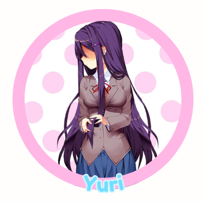
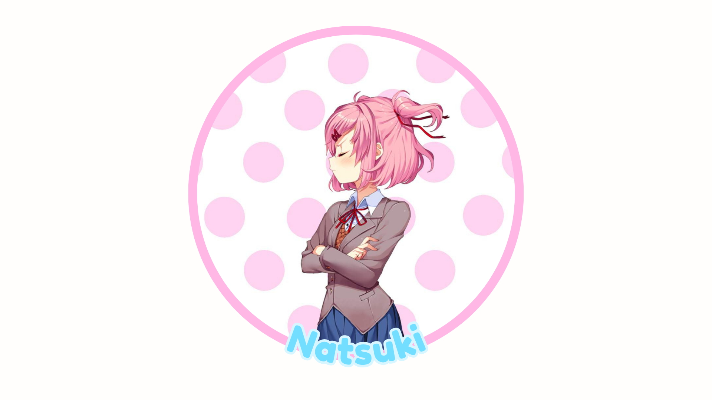
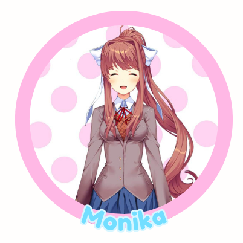

A Study of Doki Doki Literature Club by Team Salvato: the Roles of Sounds and Images in the Game
This game is not suitable for children or anyone who is easily disturbed!
WARNING! This game describes: death, suicide, hanging, knives, stabbing, gore, blood, flashing, cutting, self-harm, vomit and abuse.
DDLC Trailer!
Meet the Characters!
Sayori, who is the first to be introduced, is seen as the MC's childhood best friend and neighbor. She is a kind character who truly wishes the best for MC.
She, like the other characters, is a part of the Doki Doki Literature Club and wishes you to join to become socially ready for college.
The following three are characters the MC meets for the first time during the Club’s meeting. Not much is known about these girls just yet, but so far this is what we know:

Yuri, a timid girl who is self-conscious and apologetic, but is passionate about literature and quick to argue with Natsuki about writing. She likes tea, poems, and collecting decorative knives.

Natsuki, a headstrong girl who wishes to be taken seriously. It takes a while for her to get comfortable around new people. Like when MC is introduced into the club, she becomes upset and even complains about how we ruined the atmosphere.
Natsuki enjoys anime and baking and cute things.

Monika, the club’s president. She is kind, sporty, and popular. She founded the club to create a safe space for those wanting to showcase their passion
for literature. Monika likes playing the piano, shopping and bookstores.
A morbid twist on the average dating simulator game
Before we start, take a listen to DDLC's lovely opening to the game!
With an upbeat sound, it suggests a kind of "inviting adventurous" theme!
It truly does start that way! We begin with the protagonist being pushed into joining a club, specifically the Literature Club, which Sayori is a member of.
You decide to give it a try and become a member, where you share poetry and learn more about the others in the club. The MC soon becomes closer to a member of your choice, perhaps even closer than just friends?
Later in the game, Sayori finally opens up to you about her ongoing depression and even confesses to you. No matter how the MC responds to her confession, she ends up going home.
When MC realizes she didn't come to school the following day, the MC discovers her hanged body. In disgust and horror, the MC panics as they watch their best friend’s lifeless body in front of them.
The game quickly ends and glitches you back to the main menu.
Take a look at this compilation of gaming YouTubers’ and their reaction to this dark scene. (Apologies for the video being restricted.)
Take a listen to the audio that plays once you discover Sayori's hanging corpse.
It is the same song that is used on the main menu of the game, but it is now distorted and eerie.
Back to the "beginning"
Once the game is “reset” back to the beginning, the MC has a fuzzy remembrance of Sayori. When they try to mention their name,
it becomes censored with unknown symbols in the text. Who was once the reason you joined the club has been replaced with Monika.
Forced to continue the game as if nothing had happened, the MC continues to spend time with the other characters. Disturbing glitches and errors occur throughout the game,
such as distorted images of the characters. Later in the game, Yuri ends up creepily confessing to MC in an obsessive manner. Similar to Sayori’s death,
no matter what the MC replies with, she hysterically laughs and pulls out a knife and continuously stabs herself until she bleeds out on the ground.
Unable to leave due to a glitch, MC watches as the light goes out of her eyes. In the morning, Natsuki sees her corpse and freaks out, and flees.
Monkia apologizes, stating that she was unaware of the “script being broken that badly” and how the MC wasn't supposed to stay with Yuri's corpse for so long. It becomes aware that Monika
was the one messing with the files in the game once she visibly deletes Natsuki and Yuri’s files. And once again, the game restarts, but instead of being placed in a known location like a
classroom, we are placed in a room with Monika.
Monika finally opens up about how she was aware that her world was just a simulation and how she was a part of a game. She explains that she was able to alter files and even the characters'
personalities. Amplifying their flaws more to become unwanted by the MC because she loves the MC and wishes to pursue without competition. Monika continues to talk nihalistically on how it
was never fair from the get-go. The MC has two options: either leave the game at that or go to the files and delete her. Resetting for the last time, she cries out in anger and distrust. Monika states
at the end that regardless of choice, she will always love MC. The game then restarts completly as if nothing happened, except now with no trace of Monika.
Possible Endings
1. Once the game restarts, it is stated that Sayori is the cub’s president. She confesses that she knows everything, most likely because she is president now. She states that she intends to go through with what Monika didn’t. Monika then hacks through the game to communicate that she realizes that there is no happiness in this game. To free the MC and other characters, she must destroy the game completely. The game files are then deleted as a sweet song by Monika is sung.
2. Another alternative is that if the MC decides to delete Monika’s character file ahead of time, it results in Sayori becoming the president. Instead of being obsessed with the MC, she panics and deletes the game for herself. The screen then turns black and reappears with Sayori’s hanging body. Stating that it had to be done, and now everyone can be “happy.”
3. The last known option is tedious, but if the MC can mess with saved data and files constantly throughout the game, it'll end with Sayori thanking the MC for joining the club.
My love to Doki Doki Literature Club
My love to Doki Doki Literature Club
Growing up, I wasn’t aware of any franchises besides Mario, Sonic, and Just Dance. so when I was finally allowed internet I spent some of my time watching YouTube
videos of popular YouTubers such as Markiplier or PewDiePie. Around that time, the game DDLC had become popular due to its shock factor,
contrary to its cutesy theme that is shown in trailers. That is what I loved about the game! The unexpected, scary scenes of the game are what pulled teen-me into
downloading it on my computer and playing it firsthand. They even recently created an updated version to play on consoles, and after writing about this game,
I plan on purchasing it for the sake of nostalgia.